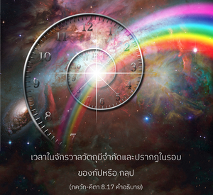
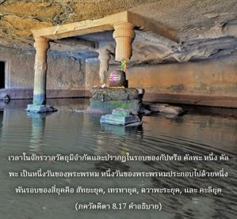

จากการคำนวณของมนุษย์ หนึ่งพันรอบรวมกันเป็นหนึ่งวันของพระพรหม และระยะเวลาเดียวกันนี้ก็เป็นหนึ่งคืนของพระพรหม


เวลาในจักรวาลวัตถุมีจำกัดและปรากฏในรอบของกัป หรือ กลฺป หนึ่ง กลฺป เป็นหนึ่งวันของพระพรหม หนึ่งวันของพระพรหมประกอบไปด้วยหนึ่งพันรอบของสี่ยุค คือ สตฺย ยุค, เตฺรตา ยุค, ทฺวาปร ยุค และ กลิ ยุค ลักษณะของ สตฺย ยุค คือมีความดี มีปัญญา และมีศาสนา โดยทั่วไปยุคนี้จะไม่มีอวิชชา และความชั่ว ยุคนี้มีระยะเวลา 1,728,000 ปี ใน เตฺรตา ยุค ความชั่วเริ่มเข้ามา ยุคนี้มีระยะเวลา 1,296,000 ปี ใน ทฺวาปร ยุค ความดี และศาสนาจะเสื่อมลงมาก ความชั่วแผ่ขยาย ยุคนี้มีระยะเวลา 864,000 ปี ท้ายสุดในกลียุค (ยุคที่เรามีประสบการณ์มากว่า 5,000 ปี) จะมีการทะเลาะวิวาท ต่อสู้ อวิชชา ไร้ศาสนา และความชั่วแพร่หลายมาก ความดีที่แท้จริงเกือบหาไม่พบเลย ยุคนี้มีระยะเวลา 432,000 ปี ในกลียุคความชั่วแผ่ไพศาลไปจนถึงปลายยุค และองค์ภควานฺเสด็จลงมาเองในรูปของ กลฺกิ อวตาร เพื่อขจัดเหล่ามาร และช่วยสาวกไว้ จากนั้นก็เริ่มต้น สตฺย ยุค ใหม่แล้ววิธีการเดียวกันนี้ดำเนินต่อไปอีกครั้ง สี่ยุคนี้หมุนเวียนเปลี่ยนไปหนึ่งพันครั้งรวมกันเป็นหนึ่งวันของพระพรหม และจำนวนเดียวกันนี้ก็รวมกันเป็นหนึ่งคืน พระพรหมมีอายุขัยหนึ่งร้อยปี จากนั้นพระพรหมจะอายุไข “หนึ่งร้อยปี”นี้จากการคำนวณทางโลกนั้นรวมกันเป็น 311 ล้านล้าน 40 พันล้านปีของโลก เมื่อการคำนวณชีวิตของพระพรหมดูเหมือนยืนยาวไม่มีวันสิ้นสุด แต่ถ้ามองจากมุมความเป็นอมตะก็เป็นเพียงแค่ชั่วแวบเดียวเหมือนสายฟ้าแลบ ในมหาสมุทรแหล่งกำเนิดมีพระพรหมจำนวนนับไม่ถ้วนเกิดขึ้นมา และจากไปเหมือนกับฟองน้ำในมหาสมุทรแอตแลนติค พระพรหมและการสร้างของท่านทั้งหมดเป็นส่วนหนึ่งของจักรวาลวัตถุ ดังนั้น บรรดาพระพรหมจึงผ่านไปเรื่อยๆ
ในจักรวาลวัตถุแม้แต่พระพรหมยังไม่เป็นอิสระจากกรรมวิธีแห่งการเกิดความแก่ โรคภัยไข้เจ็บ และความตาย อย่างไรก็ดี พระพรหมทรงปฏิบัติในการรับใช้องค์ภควานฺโดยตรงด้วยการบริหารจักรวาลนี้ ฉะนั้น ท่านจึงบรรลุความหลุดพ้นทันที สนฺนฺยาสี ผู้เจริญก้าวหน้าจะได้รับการส่งเสริมไปที่ดาวเคราะห์โดยเฉพาะของพระพรหมชื่อ พฺรหฺมโลก ซึ่งเป็นดาวเคราะห์สูงสุดในจักรวาลวัตถุที่มีอายุยืนยาวกว่าดาวเคราะห์สวรรค์ทั้งหลาย ในระดับชั้นที่สูงกว่าของระบบดาวเคราะห์ แต่พระพรหมรวมทั้งผู้อาศัยอยู่ที่ พฺรหฺมโลก ทั้งหมดต้องพบกับความตายตามกาลเวลา ซึ่งเป็นไปตามกฎแห่งธรรมชาติวัตถุ